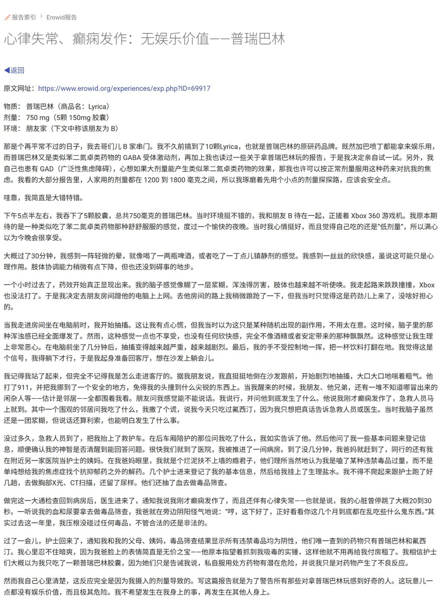

鼠尾草～🌿
@SalviaSWC
对于任何药物来说，道理都一样：第一次服用某种药物都应该从小剂量开始，以观察自身是否在低剂量下就会有副作用，之后再决定是否要加大剂量。
反之，如果第一次就吃了高剂量，而自身对此药物的副作用特别敏感，那么就容易导致不良体验，甚至是伤亡的情况......

鼠尾草～🌿
@SalviaSWC
第一次od普瑞巴林，就直接吃750mg的剂量确实不是一种理智之举。
没有像图中这位外国小哥一样心律失常、癫痫发作真是万幸......🥺
https://t.co/2VAo1l0Ybg https://t.co/WEvjjWdFJc https://t.co/Hg8VPzkYdi